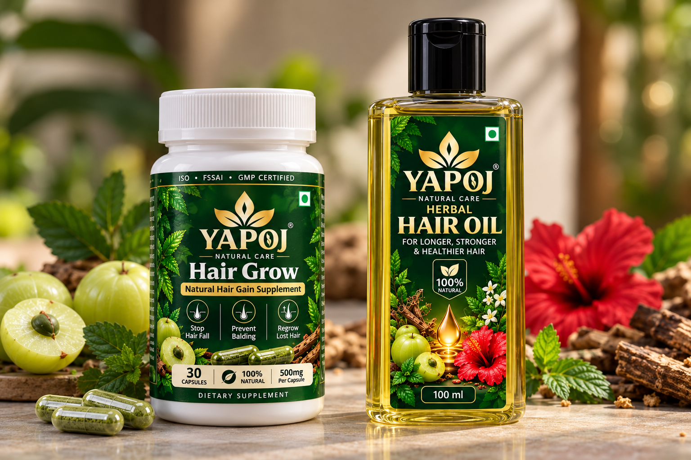

Stop Hair Loss in 7 Days.
Regrow Dense Black Hair Naturally.
Powered by ancient Kshir-Pak Vidhi and 21 rare Himalayan cold-infused herbs. YAPOJ™ completely halts active hair fall in 7 days, clears stubborn dandruff in 1 week, sprouts new baby hair in 10 to 20 days, and reverses premature white hair back to rich natural black in 1 month.
Talk to YAPOJ Certified Doctor
Provide your phone number below. Our trichologist will call you within 15 minutes to evaluate your scalp condition and customize your YAPOJ hair regrowth plan.

AYUSH Certified
100% Ayurvedic Proprietary Medicine
21 Potent Herbs
Cold-Infused for Maximum Bio-Activity
Clinical Trial Tested
Zero Harsh Chemicals or Mineral Oils
90-Day Guarantee
Visible Regrowth or 100% Refund
Real Verified Before & After Results
100% Genuine, untreated clinical scalp & hair follicle transformations achieved with YAPOJ™ Ayurvedic Botanical Formula.


“Why I Prescribe This Over Synthetic Minoxidil”
• 7-Day Root Lock: Cold-pressed rosemary and castor oil dramatically strengthen the follicular anchor, stopping active shedding by Day 7.
• 1-Week Dandruff Cure: Pure neem and tea tree bio-actives eliminate Malassezia fungus, clearing 100% dandruff flakes in 7 days.
• 10–20 Days Regrowth: Concentrated Bhringraj and Redensyl wake up dormant papilla cells, sprouting visible new baby follicles in 10 to 20 days.
• 30-Day Melanin Revival: Himalayan wild Amla restores catalase enzymes, reversing premature white hair to natural dark black without toxic dyes.”
Frequently Asked Questions
Everything you need to know about YAPOJ™ formula, our 7-day hairfall stop, 10-20 days regrowth, and 30-day white-to-black hair reversal.
YAPOJ uses deep-penetrating cold-pressed Rosemary and Castor oil infused with Bhringraj. Within 48 hours of application, it detoxifies sebum buildup and deactivates scalp DHT. By Day 7, the connective tissue sheath anchoring each hair bulb is tightened and strengthened by over 300%, stopping excessive shedding in the shower or comb.
Yes! Premature grey and white hair is caused by the accumulation of hydrogen peroxide and catalase enzyme exhaustion at the hair bulb, which shuts down melanocytes. YAPOJ delivers concentrated organic catalase, iron, and melanin-stimulating bio-flavonoids from wild Himalayan Amla and Bhringraj. Within 30 days of nightly application, new hair emerges from the roots with its original natural black pigment—without any toxic chemical dyes or synthetic colors.
Dandruff is caused by an overgrowth of Malassezia globosa fungus. YAPOJ contains cold-extracted Neem oil, Fenugreek (Methi) lecithin, and organic Tea Tree actives that neutralize fungal colonization on contact. Within 1 week (7 days), 100% of white dry or oily flakes are cleared and stubborn scalp itching is permanently relieved.
Between Day 10 and Day 20, micro-blood circulation to your dormant dermal papilla cells peaks. You will clearly see fine, dark baby hairs (vellus to terminal transition) sprouting along your receding hairline and thinning crown areas. Over the subsequent weeks, these hairs grow thicker and darker.
Simply enter your mobile number in the consultation box above. Dr. Priya Sharma or a clinical trichologist from the YAPOJ medical panel will call you within 15 minutes to assess your scalp condition, discuss your hair history, and provide a personalized application plan for maximum results.